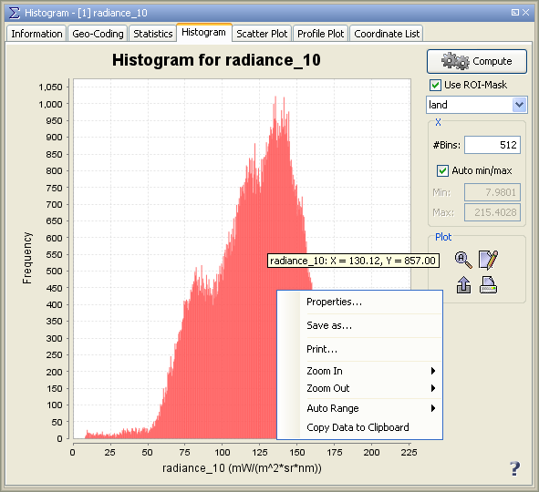

Histogram Display
This dialog displays a histogram for the selected band. See the screenshot for an example.

The value range of the geophysical image data is evenly divided into bins. The histogram shows how many pixels of
the image fall into each of the bins.
Options Panel
In the panel to the right there are several configuration options. Note that the histogram needs to be recomputed
in order for configuration changes to take effect.
- Refresh View

Causes the histogram to be (re-)computed.
The button is only enabled when a computation is expected to lead to a different histogram than the one on
display.
- Collapse/Expand Options Panel
 /
/ 
Collapses or expands the options panel.
- ROI Mask
A ROI mask may be used to mask out values. All values which do not match the mask are not taken
into account. For convenience, the mask manager may be openened from the histogram window using the
 -button.
-button.
For creating a ROI mask from the histogram, see 'Select Mask 'histogram_plot_area'' from the context menu.
- Bins
The number of bins can be explicitly set.
The bins will be evenly distributed in the defined value range.
- Log10 scaled values
When this option is enabled, not the band values themselves but their common logarithms will be considered
during the computation.
This option will be disabled when the band contains no positive values.
- Auto min/max
When enabled, the minimum and maximum band value to be considered during the computation of the histogram are
determined automatically.
When disabled, the user may set these values.
- Log10 scaled
Causes the x-axis of the current histogram to be log10-scaled. This option will be disabled when the band
contains at least one negative value or when the displayed histogram was created with log10 scaled values.
- Zoom all

Adjusts both axes to the full data range.
The 'Auto range' entry in the context menu can also be used (see below).
- Edit Properties

Edit several properties (colors, axes, etc.) of the diagram.
he 'Properties...' entry in the context menu can also be used (see below).
- Save chart as image

Save the diagram as image (PNG).
The 'Save as...' entry in the context menu can also be used (see below).
- Print chart

Print the diagram.
The 'Print...' entry in the context menu can also be used (see below).
- Help

Displays this page.
Context Menu
A click with the right mouse button on the diagram opens a context menu
comprising the following menu items:
- Properties...
Edit several properties (colors, axes, etc.) of the diagram.
The on the right 'Plot' panel can also be used.
- Copy
Copies the diagram as image into the clipboard.
- Save As...
Save the diagram as image (PNG).
The on the right 'Plot' panel can also be used.
- Print...
Print the diagram.
The on the right 'Plot' panel can also be used.
- Zoom In
- Both Axes - Zoom in on both axes.
Zooming can also be achieved by drawing a rectangle by clicking at the top left corner of the desired
zooming area, dragging the mouse to the bottom right corner, and releasing. Note that this won't work when
'Select Mask 'histogram_plot_area'' is selected.
- Domain Axes - Zoom in only on the domain axis.
- Range Axes - Zoom in only on the range axis.
- Zoom Out
- Both Axes - Zoom out on both axes.
- Domain Axes - Zoom out only on the domain axis.
- Range Axes - Zoom out only on the range axis.
- Auto Range
- Both Axes - Adjusts both axes to the full data range.
The on the right 'Plot' panel can also be used.
- Domain Axes - Adjusts the domain axis to the full data range.
- Range Axes - Adjusts the range axis to the full data range.
- Select Mask 'histogram_plot_area'
Allows the user to create a mask from the histogram.
After selecting the menu entry, a horizontal range in the histogram can be chosen by clicking at one end of
the range, dragging the mouse to the other end, and releasing.
The mask will be selected immediately.
- Delete Mask 'histogram_plot_area'
Removes the mask 'histogram_plot_area' (in case it has been created before).
- Copy Data to Clipboard
This will copy the diagram data as tabulated text to the system clipboard.
The copied text can then be pasted directly into a spreadsheet application
(e.g. Microsoft® Excel).